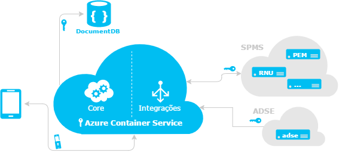
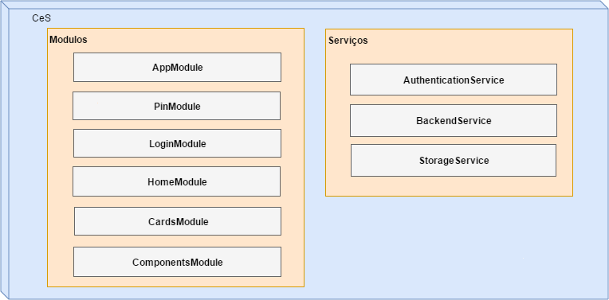
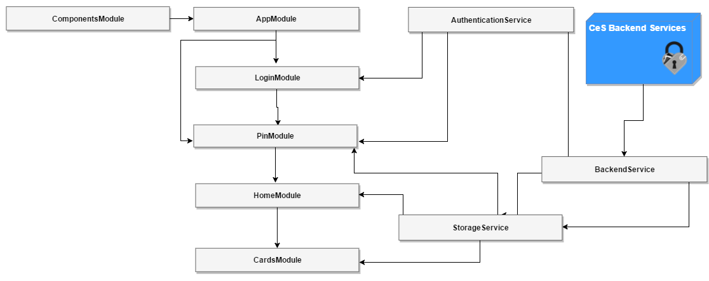
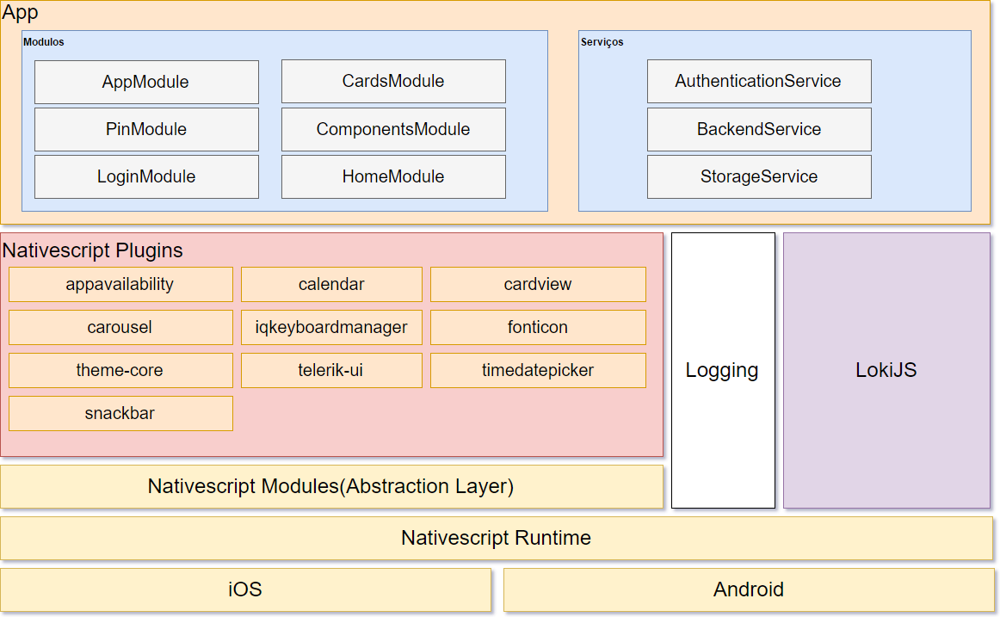

Arquitetura da Aplicação

A aplicação CeS é desenvolvida em Angular 2, pelo que apresenta a arquitectura demonstrada no diagrama anterior. De o modo geral, é constituida por 2 componentes gerais: Módulos e Componentes.

Módulos
Entre os módulos, cada um destes tem a sua responsabilidade, facilitando assim uma manutenção mais simples.
AppModule - Cada aplicativo tem pelo menos um módulo Angular, o módulo raiz (root) que inicia o aplicativo. Cartões de Introdução e Error (páginas de erro),
PinModule - modulo para registo do PIN da Carteira, autenticação e mudança de PIN, com ligação ao serviço encriptado de Autenticação. O PIN fica guardado apenas no armazenamento do dispositivo móvel (Storage Service).
LoginModule - componente de autenticação na aplicação. Mediante o serviço de autenticação escolhido (Chave Móvel Digital ou Registo Nacional de Utente )
CardsModule - Coteúdo dos cartões (view de Cartões da CeS em detalhe)
HomeModule - view de Cartões da CeS (vista fechada), Menus ( Settings e About), CardsList, adicionar, visualizar e remover cartões.
ComponentsModule - componentes de interface (navigation drawer, scroll, etc)
Serviços
AuthenticationService - Autenticação e ligação aos servidores (Backend) de forma segura e encriptada.
BackendService - ligação às base de dados dos vários sistemas de informação (centrais e locais) e o Servidor CeS (Azure Container Service -Docker Swarm) é feita usando o protocolo HTTPS (ver diagrama 1)
Toda a informação trocada é ainda encriptada e assinada digitalmente usando os algoritmos de encriptação RSA (2048 bit) e AES (256 bit). O formato de dados utilizado é JOSE - JSON Object Signing and Encryption. O par de chaves RSA do servidor está alojado no Azure Key Vault, sendo as operações de assinatura e desencriptação efetuadas lá.
Storage Service - Serviço de armazenamento de dados no dispositivo móvel, devidamente encriptado. Através deste serviço, é armazenado o PIN, Home View e os cartões.
CeS Backend Services - conjunto de serviços de apoio ao funcionamento da CeS (autenticação, comunicação, telemetria.)
Comunicação

Arquitetura NativeScript
Para mais informações sobre a arquitetura default de nativescript consulte esta secção

Plugins
appavailability - para verificar a disponibilidade de outros aplicativos no dispositivo
calendar - permite manipular eventos no calendário nativo do dispositivo, permitindo apagar, criar, eliminar e encontrar eventos. Na CeS, é utilizado para adicionar eventos de levantamento de prescrições da eGuia de Tratamento.
cardview - fornece um widget XML para implementar o componenteMaterial Design CardView
carousel - efeito carousel, utilizado nos ecrãs informativos iniciais
iqkeyboardmanager - wrapper para iOS que impede a a sopreposição do teclado nos controlos UITextView fonticon - font icons com NativeScript theme-core - core NativeScript theme telerik-ui - Telerik UI timedatepicker - selectores de data e hora para Android e iOS snackbar - Material Design Snackbar para Android e SSSnackbar Cocoapod para iOS